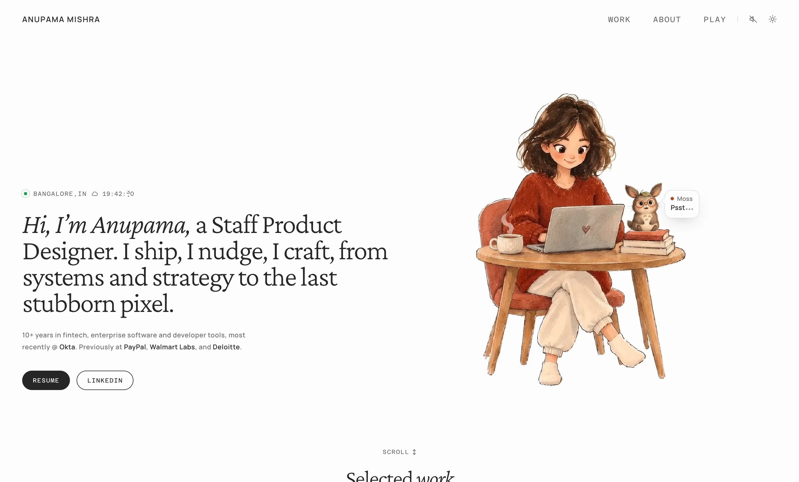
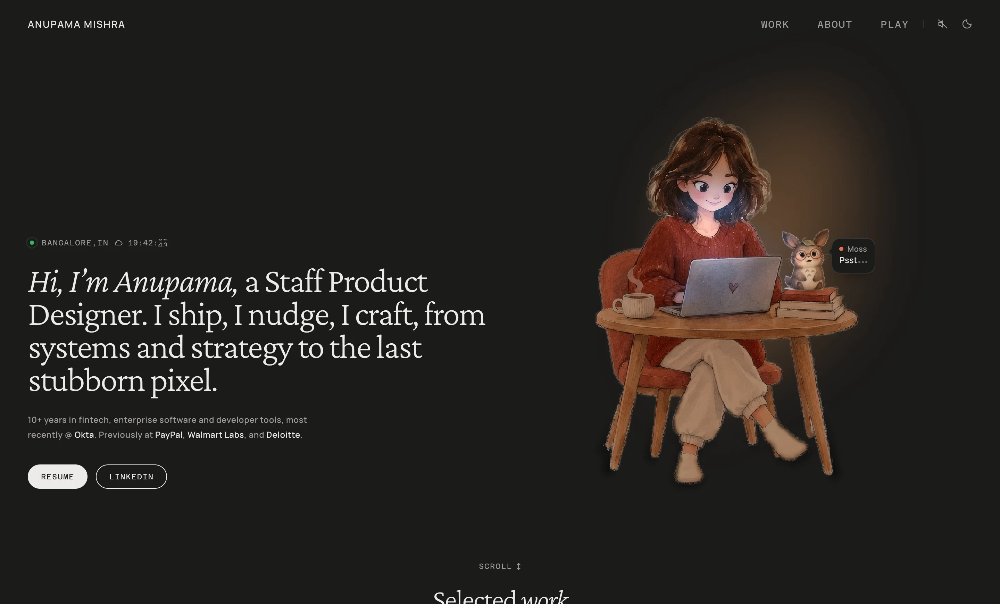

Press Play or click the screen. A beat of flat black while the page loads, then it breaks into pixels; one is always the last to go, on the word "pixel". Slow ×4 shows the order.
A · Scatter — round 1's: pixels wink out in a loose scatter from the top.
B · Closing in — the edges of the screen clear first and the black closes in on the word, so the eye is led to "pixel" before the last one goes.
C · Ripple out — the reverse: the black clears in a ring that starts at the word and spreads to the corners, while the one on the word holds.
D · Resolution — the black loses resolution in four steps, big blocks to fine grain, like an image loading, until one pixel is left. My pick: the one that reads most like "pixels".
E · Falling — the pixels drop out of the frame row by row from the bottom, like tiles; the last one hangs a beat, then falls too.
F · Pixel blinds — your two picks together: the slats of the blinds pull back to the left in pixel steps, top first; the last pixel stays on the word.
G · Full stop — after the scatter, the last pixel glides along the line and shrinks into the full stop after "pixel", ending the sentence.
H · Nudge — the last pixel is left a little off the grid; it nudges into place (the sentence's "I nudge"), and only then goes.
I · Blinds — round 1's Blinds, as you liked it, for comparison.
Connection — the curtain follows the page's real loading. Fast: ready at once, so it plays straight through. Slow: it clears as the page loads and the last part (the last pixel, or the last slats) waits until the page is ready. Very slow: at 4 seconds it lets go anyway and the page shows as it is; the portrait (here, a blank patch) arrives a moment later. It never runs faster than its own pace, only slower.
On the site any of these would still wait for the page to load, skip on a key or click, and simply fade under reduced motion.